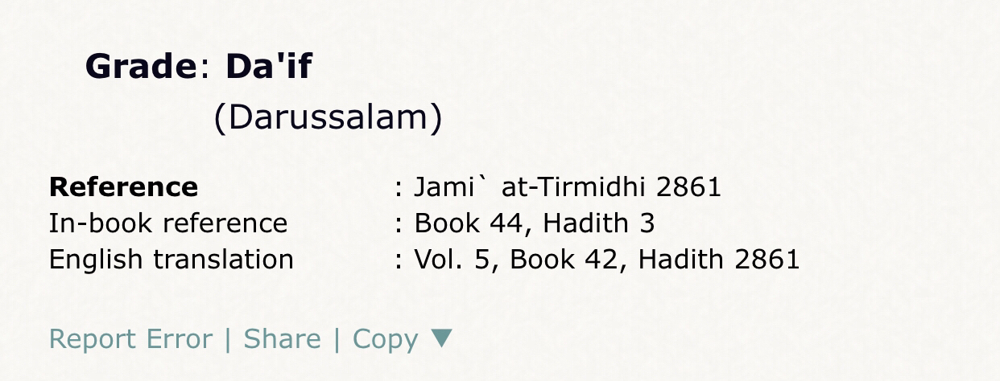

The sanad of the narration ➡️
حَدَّثَنَا عَارِمٌ، وَعَفَّانُ، قَالَا: حَدَّثَنَا مُعْتَمِرٌ، قَالَ: قَالَ أَبِي: حَدَّثَنِي أَبُو تَمِيمَةَ، عَنْ عَمْرٍو – لَعَلَّهُ أَنْ يَكُونَ
قَدْ قَالَ: الْبِكَالِيَّ يُحَدِّثُهُ عَمْرٌو – عَنْ عَبْدِ اللهِ بْنِ مَسْعُودٍ – قَالَ عَمْرٌو إِنَّ عَبْدَ اللهِ -،
Some would try to argue that authenticators said the isnad is authentic even if we go by them the matn is
weak as I am going to show
#1 problem
The shaq of the rawis (narrators)
عَنْ عَمْرٍو – لَعَلَّهُ أَنْ يَكُونَ قَدْ قَالَ: الْبِكَالِيَّ يُحَدِّثُهُ عَمْرٌو – عَنْ عَبْدِ اللهِ بْنِ مَسْعُودٍ – قَالَ عَمْرٌو إِنَّ عَبْدَ اللهِ
Here we see the doubt of Amr al-backaly of having heard this hadith ibn mas’ud
And as stated in al-irshasat fi taqwiyat ulum al-hadith it is rejected
#2 problem A gap between Amr al-bakali and ibn mas’ud
As al-Bukhari (RH) said in Al-Tarikh Al-Kabir volume 2 page number 200 narration number 2191 he states
“and it isn’t known for Amr to hear ibn mas’ud”
Many would try to argue that al-Bukhari is wrong because one of the translations of Amr say he is a sahabi
and saw yarmook and narrated from ibn mas’ud
In response to this we see first there ikhtilaf in the suhba (company hood) of Amr second the word rawa means
narrated from note heard third living in same era doesn’t mean hear I live in the same era as joe Biden
did hear him no. This was stated in mawkif al-imamayn al-Bukhari w muslim fi ishtirat al-liqa’ w al-sama’
fi al-sanad al-mu’an’in bayn al-muta’asireen page number 240-241 they state that Amr al-bakaly lived in the
same time era but the possibility of both seeing each other is not strong
#3 problem the matn is weak because ibn mas’ud himself states he wasn’t with the prophet that night of the
Jin as stated in sahih muslim 450d
Translation: “Abdullah (b. Mas'ud) said:
I was not with the Messenger of Allah (ﷺ)but I wish I were with him.”
-Source: Sahih Muslim 450 d
Grade: Sahih (authentic) according to the conditions of Bukhari and Muslim
Many would try to argue that he did but the most authentic hadith say he didn’t meaning the matn is weak
Now there is another sanad of the narration found in Jâmī’ at-tirmidhi 2861 however the sanad here
contains جعفر بن ميمون التميمي who is he lets go to tahzeeb al-kamal
Translation: “Ahmed bin hanbal said he isn’t strong In hadith
Yehia bin maa’in said: he isn’t trustworthy
Al-Nisa’i said: he isn’t strong
Ahmed bin ady wrote his hadith in the weak ones
Al-Bukhari said he is nothing
Yehia bin sa’id weakened him”
-Source: Tahzib al-Kamal fi asmaa al-Rijal Al-Mizy (RH) volume 5 page number 115 person number 959 by
name “Jaafar bin maymoon”
Some scholars did authenticate him but when he does tafarud in it so the hadith is considered weak
Now lets see the scholars who weakned the hadith
Translation: “That is a weak report because it isn’t known for Amr to hear from ibn mas’ud then he also
weakens the hadith in tirmidhi cause ja’far and this the companionship of Amr is in dispute”
-Source: Musnad Ahmed muhaqaq (Shuayb al-Arna’ut [RH]) volume 6 page number 334-336
In tafsir ibn kathir of 46:29 he mentions the hadith then comments on it and says it is too strange (weak)
-Source: Tafsir al-Qūr’ān al-azim ibn kathir (RH) volume 7 page number 293 interpretation 46:29
Darussalam weakned the hadith in tirmidhi

Also al-Bukhari himself weakned it that is why he said Amr didn’t hear from ibn mas’ud And their are more people
who weakned it but this is enough Now an important point to see what is the meaning of “yarkabun” that they are
trying to say it means r@ped In musnad ahmed in the footnote it reads the following
Also more evidence for ja’far to be weak
Our opponent can ask well then why did he get hurt it is because he was reading Qūr’ān for hours
and they are riding over him And this is another day of exposing the lies of the nasaras Another thing
how does this disprove Islam ? I mean they should read Isaiah 20:3 يقول كاتب سفر التثنية 33 / 26:
[ليس مثل الله يا يشورون.يركب السماء في معونتك والغمام في عظمته
يقول كاتب سفر الملوك الثاني 4 / 34 عن النبي إليشع:
[ثم صعد واضطجع فوق الصبي ووضع فمه على فمه وعينيه على عينيه ويديه على يديه وتمدّد عليه فسخن جسد الولد.!]
Does this mean with the same logic their God is f*** the sky or the donkey ?
These are doubts of the jahils